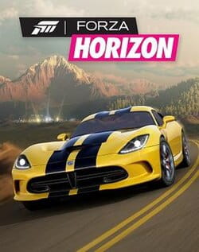
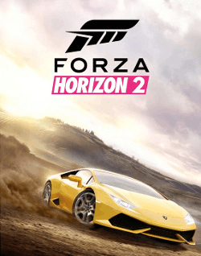
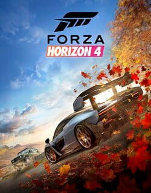
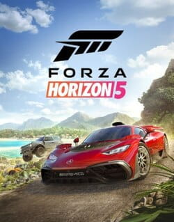
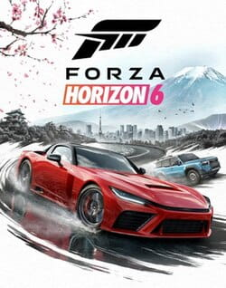

Forza Horizon
A Forza Horizon egy 2012-es autóversenyes videojáték, amelyet a Playground Games fejlesztett és a Microsoft Studios adott ki Xbox 360-ra 2012. október 23-án. A játék a Forza sorozat ötödik része, amely eredetileg a Turn 10 Studios által fejlesztett Forza Motorsport címekből származik. A játék a kitalált Horizon Fesztiválon, egy utcai versenyen játszódik, ahol a játékos célja a versenyek megnyerésével való előrejutás, miközben mutatványok és tevékenységek végrehajtásával növeli népszerűségét. A Forza sorozat korábbi játékaival ellentétben a Forza Horizon egy nyitott világban játszódik, amelyet a játékosok felfedezhetnek.

Forza Horizon 2
A Forza Horizon 2 egy 2014-ben megjelent autóversenyes videojáték, amelyet a Microsoft Xbox One és Xbox 360 konzolokra fejlesztett. Ez a 2012-es Forza Horizon folytatása, a Forza sorozat hetedik része, és a sorozat első többkonzolos része. A játék Xbox One verzióját a Playground Games fejlesztette, az eredeti Forza Horizon mögött álló csapat, míg az Xbox 360-as verziót a Sumo Digital, a Forza sorozat fejlesztője, a Turn 10 Studios pedig mindkét verziót támogatta. Az Xbox 360-as verzió egyben az utolsó Forza játék is, amely a platformra megjelent. A játék pozitív kritikákat kapott a kritikusoktól, és a folytatás, a Forza Horizon 3, 2016. szeptember 27-én jelent meg.

Forza Horizon 3
A Forza Horizon 3 egy 2016-ban megjelent autóverseny játék, amelyet a Playground Games fejlesztett és a Microsoft Studios adott ki Xbox One-ra és Windowsra. Ez a Forza sorozat kilencedik része, és a Forza Horizon alsorozat harmadik része. A játék egy kitalált Ausztráliában játszódik, ahol a játékos a címszereplő Horizon autófesztivál vezetője, és események teljesítésével kell bővítenie a fesztivált, hogy rajongókat szerezzen. A korábbi Forza Horizon játékokhoz hasonlóan ez is egy nyitott világú környezetet kínál, ahol a játékosok szabadon barangolhatnak a térképen.

Forza Horizon 4
A Forza Horizon 4 egy 2018-as autóverseny játék, amelyet a Playground Games fejlesztett és a Microsoft Studios adott ki. 2018. október 2-án jelent meg Windowsra és Xbox One-ra, miután bejelentették az Xbox E3 2018 konferenciáján. Egy továbbfejlesztett verzió jelent meg Xbox Series X/S-re 2020. november 10-én. A játék Nagy-Britannia egyes területeinek kitalált ábrázolásában játszódik. Ez a negyedik Forza Horizon cím a Forza Horizon 3 után, és a Forza sorozat tizenegyedik része. A játék arról ismert, hogy változó évszakokat vezet be a sorozatba, valamint számos tartalombővítő frissítést tartalmaz, amelyek új játékmódokat is tartalmaztak. A folytatás, a Forza Horizon 5, 2021. november 9-én jelent meg. A Forza Horizon 4-et 2024. december 15-én vonták le a forgalomból minden platformon.

Forza Horizon 5
A Forza Horizon 5 egy 2021-ben megjelent autóversenyes játék, amelyet a Playground Games fejlesztett és az Xbox Game Studios adott ki. Ez az ötödik Forza Horizon cím a Forza Horizon 4 után, és a Forza sorozat tizenkettedik fő része. A játék egy kitalált Mexikó-képviselőhelyen játszódik. 2021. november 9-én jelent meg Windowsra, Xbox One-ra és Xbox Series X/S-re. Ez az utolsó fő Forza rész, amely Xbox One-on jelent meg. A játék 2025. április 29-én jelent meg PlayStation 5-re is, ez volt az első olyan fő Forza játék, amely nem Microsoft platformon jelent meg.

Forza Horizon 6
A Forza Horizon 6 egy autóversenyes játék, amelyet a Playground Games fejlesztett és az Xbox Game Studios adott ki. Ez a hatodik Forza Horizon cím a Forza Horizon 5 után, és a Forza franchise tizennegyedik fő része. A játék Japán egy kitalált ábrázolásában játszódik, és Tokió stilizált változatát mutatja be a játékvilág fővárosaként. A megjelenés várhatóan 2026. május 19-én jelenik meg a Standard vagy Deluxe kiadással rendelkező játékosok számára, és 2026. május 15-én, ha a játékos megvásárolta a Premium kiadást. Windowsra és Xbox Series X/S-re, PlayStation 5-re pedig még ugyanebben az évben megjelenik.
